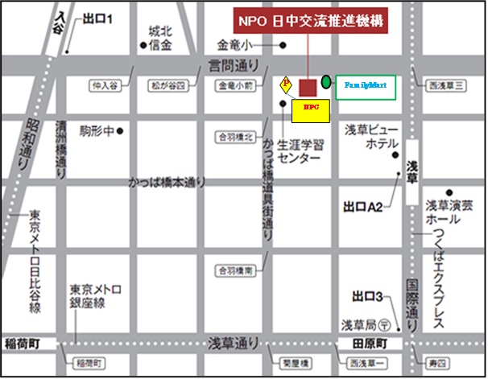
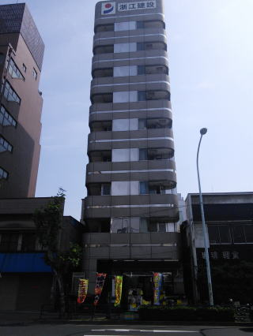

本文へスキップ
日中学生交流ネットワーク
Japan China Student Network
JCSN
アクセス
ACCESS
JCSN所在地（NPO日中交流推進機構）

【アクセス】
○東京メトロ日比谷線 入谷駅 ：出口１から徒歩１０分
○東京メトロ銀座線 田原町駅：出口から３徒歩１2分
○つくばエクスプレス 浅草駅 ：出口A2から徒歩１０分
※
浙江建設と書いてある薄い茶色のビルです。
※
一階の「みらい」というディスカウントショップが目印です。

【所在地】
〒111-0035
東京都台東区西浅草3-29-19 浙江建設ビル6階
TEL 03-5830-3087 FAX 03-5830-3089
このページの先頭へ
contents
トップページ
top page
プロフィール
profile
OB・OG会
OB・OG
活動報告
report
協賛企業
sponsor
協力企業
cooperation
アクセス
access
バナースペース
スケジュール
schedule
入会ご案内
admission
代表ブログ
blog
JCSN(NPO日中交流推進機構）
〒111-0035
東京都台東区西浅草3-29-19
浙江建設ビル6階
TEL 03-5830-3087
FAX 03-5830-3089